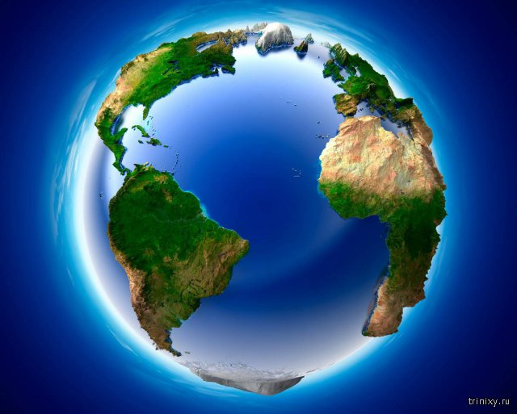

Одно изображение с локального компьютера
Одно изображение с удаленного источника

Таблицы 3*3
| № | Висота космічного апарату, км |
Кут нахилу, градуси |
|---|---|---|
| 1 | 400 | 97.031 |
| 2 | 668 | 98.061 |
| 3 | 800 | 98.607 | https://ela.kpi.ua/ |
Различные виды списков
Маркированный список
-
Цифровий тепловізор має такі особливості:
- веде спостереження вдень і вночі, при слабкій освітленості та повній темряві;
- працює при низькому контрасті, задимлені, запиленні, тумані, дощі, снігопаді та за будь-яких інших погодних умов;
- не піддається впливу сходу і заходу сонця;
-
Цифровий тепловізор має такі особливості:
- не боїться прямого засвічення і засліплення прожекторами або фарами;
- не реагує на тінь та відблиски;
- дозволяє виявляти теплові сигнатури в маскувальному одязі та рослинності;
-
Цифровий тепловізор має такі особливості:
- розпізнавати типи об’єктів: тварин, птахів, людей, вело-, мото- і автотранспорт;
- бачити і розпізнавати об’єкти на великих відстанях.
Нумерованный список
-
Тепловізійні системи застосовуються для:
- виявлення цілей і збору даних військовими і поліцейськими;
- безпеки кордонів (як його незаконний перетин особами, так і карантинний контроль) і боротьби з тероризмом;
- безпеки і охорони інфраструктурних об’єктів та об’єктів приватної власності;
-
Тепловізійні системи застосовуються для:
- профілактичного технічного обслуговування (своєчасного виявлення несправностей, як механічні, так і електричні);
- управління технологічними процесами;
- виявлення і аналізу пожеж;
-
Тепловізійні системи застосовуються для:
- контролю активних речовин (при вивантаженні вагонів та цистерн, рівня в ємності та стану деяких хімічних речовин);
- пошуково-рятувальних операцій підчас та після надзвичайних ситуацій;
- машинобудівній промисловості;
-
Тепловізійні системи застосовуються для:
- огляду і аналізу ґрунту та контролю посівних полів;
- медицини, діагностики та ветеринарії;
- тестів якості у виробничому середовищі (електричних схем);
-
Тепловізійні системи застосовуються для:
- виявлення забруднення та навали шкідників;
- визначення температури тіла, наприклад, для виявлення грипу;
- спостереження тварин в їх природному середовищі, для дослідження поведінки;
-
Тепловізійні системи застосовуються для:
- спостереження за природними явищами (вулканами, гейзерами) та метеорологія (аналіз погодних умов);
- діагностика несправностей і усунення неполадок (аналіз теплових втрат стін, покрівлі будівель);
- науковців (астрономія, прогнозування сонячної активності);
- науковців (астрономія, прогнозування сонячної активності);
Вложенные списки
-
Початком цифрової обробки знімків є процедури отримання та реєстрації первинних (необроблених) даних, тобто
даних отриманих технічними засобами ДЗЗ.
- Попереднє оброблення – «Рівень 0»:
- Приймання електромагнітних сигналів;
- Демодуляція сигналів;
- Декодування засекреченої інформації;
- Декомутація службових та інформаційних слів;
- Реєстрація інформації;
- Оперативний перегляд і конвертування інформації;
- Нормалізація – «Рівень 1»:
- Координатна прив’язка;
- Поділ за кадрами (сценами);
- Оцінка якості рядків зображення;
- «Рівень 1A»:
- Радіометричне коригування;
- Коригування пошкоджених пікселів;
- «Рівень 1B»:
- Геометричне коригування;
- «Рівень 1C»:
- Географічна прив’язка знімка до карти;
- Атмосферне коригування частин знімка, схованих під хмарами;
- «Рівень 1D»:
- Географічна прив’язка знімка за опорними точками;
- Міжгалузеве оброблення – «Рівень 2»;
- Перерахунок координат зображення у визначену картографічну проекцію;
- «Рівень 2A»:
- Повне радіометричне коригування;
- «Рівень 2B»:
- Повне геометричне коригування;
- «Рівень 2C»:
- Орторектифікація;
- Тематичне оброблення:
- «Рівень 3»:
- Формування тематичних шарів просторової інформації;
- «Рівень 4»:
- Формування просторових моделей (карт, блок-діаграм, проектів тощо).
- «Рівень 3»:
Наступними операціями обробки є [28]:
Списки определений
- Рівень 1
- це оброблення даних ДЗЗ, змістом якого є виконання необхідних процедур геометричного й радіометричного коригування та просторового прив’язування за орбітальними даними.
- Рівень 2
- це рівень оброблення даних ДЗЗ, змістом якого є його просторове прив’язування з використанням наземних опорних точок.
- Рівень 3
- це рівень оброблення даних ДЗЗ, змістом якого є отримання значень дешифрувальних ознак або визначення фізичних параметрів об'єктів зондування.
- Рівень 4
- це рівень оброблення даних ДЗЗ, змістом якого є дешифрування космознімка та складання легенди.